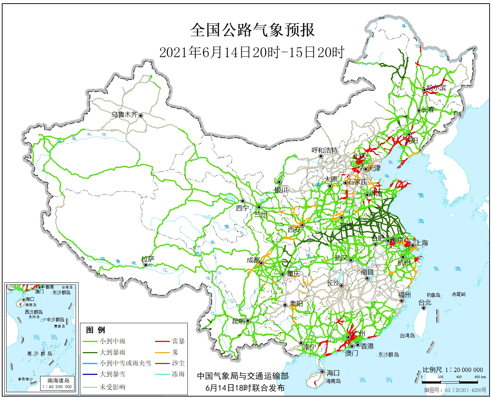

时间:2021-6-15 15:48 来源：中国天气网
中国气象局与交通运输部2021年06月14日联合发布全国主要公路气象预报
6月14日20时至15日20时，内蒙古东部、东北地区西部、西藏北部和东南部、青海北部和西部、西北地区东部、黄淮、江淮大部、江汉西部、西南地区东北部和南部等地部分地区有中到大雨，其中，内蒙古东北部、黑龙江西北部、山东南部、河南东部、苏皖北部等地部分地区有暴雨或大暴雨，上述地区局地伴有雷暴天气。另外，辽宁东部、河北南部、天津、山东北部、河南北部、浙江东部、陕西中部和南部、四川东部、贵州东部、重庆南部等地局地有雾。
京沪高速(G2)江苏新沂—淮安段、江苏高邮境内路段
京台高速(G3)山东曲阜—江苏徐州—安徽宿州—蚌埠段
京港澳高速(G4)河南临颍—漯河—驻马店段
沈海高速(G15)山东胶南—日照—江苏连云港—滨海段、江苏盐城—东台—如皋段
日兰高速(G1511)山东日照—莒县—费县段、山东曲阜境内路段
青银高速(G20)青岛境内路段
青新高速(G2011)青岛境内路段
青兰高速(G22)山东诸城境内路段

长深高速(G25)江苏连云港—淮安—洪泽段 淮徐高速(G2513)江苏淮安—宿迁—徐州段 连霍高速(G30)江苏连云港—徐州—河南商丘段 济广高速(G35)鲁豫省界—河南商丘—安徽亳州—阜阳段 宁洛高速(G36)南京境内路段、安徽明光—蚌埠—界首—河南周口—平顶山段 沪陕高速(G40)河南沁阳—南阳—豫陕省界段 沪蓉高速(G42)四川邻水—广安段 大广高速(G45)河南扶沟—周口—平舆段 二广高速(G55)河南南召—南阳—豫鄂省界段 包茂高速(G65)四川大竹—邻水段 福银高速(G70)湖北谷城—十堰—鄂陕省界段 昆磨高速(G8511)云南元江境内路段 宁靖盐高速江苏盐城境内路段 宁宿徐高速江苏盱眙—泗洪—宿迁段 宿淮高速江苏淮安—盐城段 兰南高速河南许昌—南阳段 商周高速河南商丘—周口段 新阳高速河南平舆—驻马店—泌阳段 永登高速河南鹿邑—许昌段 104国道山东滕州—徐州—安徽滁州段 105国道河南商丘—安徽亳州—阜阳段 106国道河南太康—淮阳—项城段 107国道河南临颍—漯河—驻马店段 111国道黑龙江齐齐哈尔—嫩江—内蒙古大杨树段 204国道山东胶南—山东东港—江苏连云港—盐城—海安段 205国道山东临沂—江苏淮安—观音寺段 206国道山东诸城—临沂—徐州—安徽淮南段 207国道河南南召—镇平段 209国道河南西坪—豫鄂省界段 210国道陕西镇巴境内路段、四川达州—大竹段 213国道云南元江境内路段 301国道黑龙江齐齐哈尔—内蒙古阿荣旗—乌奴耳段 303国道吉林双辽境内路段 304国道辽蒙省界—内蒙古科尔沁左翼后旗段 308国道青岛境内路段 310国道江苏连云港—徐州—河南商丘段 311国道徐州—安徽亳州—河南许昌—叶城段、河南西峡境内路段 312国道河南唐河—南阳—陕西商南段 318国道四川大竹—渠县段 327国道山东平邑—临沂—江苏连云港段 受雷暴影响的主要路段有： 京哈高速(G1)辽宁葫芦岛—锦州—盘锦—沈阳段、辽宁铁岭境内路段、哈尔滨境内路段 京沪高速(G2)山东泰安境内路段、上海境内路段 京台高速(G3)山东泰安境内路段 京港澳高速(G4)河北高碑店境内路段、河北高邑—邢台—邯郸段、广东佛冈—广州段 广澳高速(G4W)广东中山—珠海段 京昆高速(G5)河北高碑店境内路段 京藏高速(G6)北京昌平境内路段 京新高速(G7)北京昌平境内路段 绥满高速(G10)哈尔滨境内路段 哈同高速(G1011)哈尔滨—黑龙江宾县段 鹤大高速(G11)辽宁皮口—大连段 丹阜高速(G1113)沈阳境内路段 沈吉高速(G1212)沈阳—辽宁抚顺段
本文来源：中国天气网